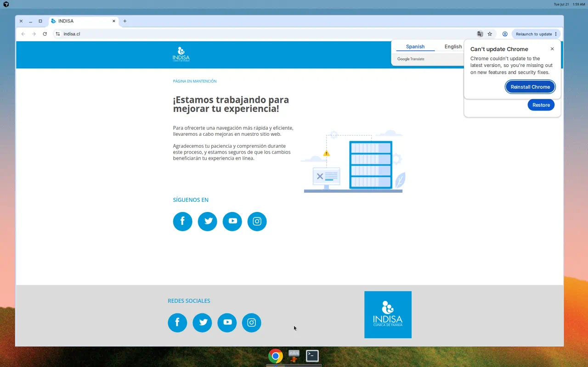

DIAGNÓSTICO UX / UI
DISEÑO ESTÉTICO VS FUNCIONAL · HOY · WWW.INDISA.CL
HOY · 21 JUL 2026
Diseño estético vs funcional
La página de mantención se ve limpia y con marca Indisa.
Pero
no cumple ninguna función clínica
: no hay urgencia, reserva, sedes ni menú.
La estética está sobrepuesta a la función: el paciente sale sin poder actuar.
✓ Se ve bien
(marca + mensaje)
✗ No sirve
(cero tareas clínicas)

Captura home · hoy · mantención (sin navegación)
Captura viva indisa.cl · 2026-07-21
Created & Proprietary MKOF 2025 / All rights reserved